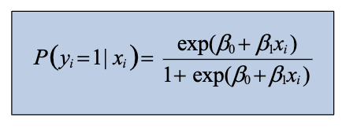
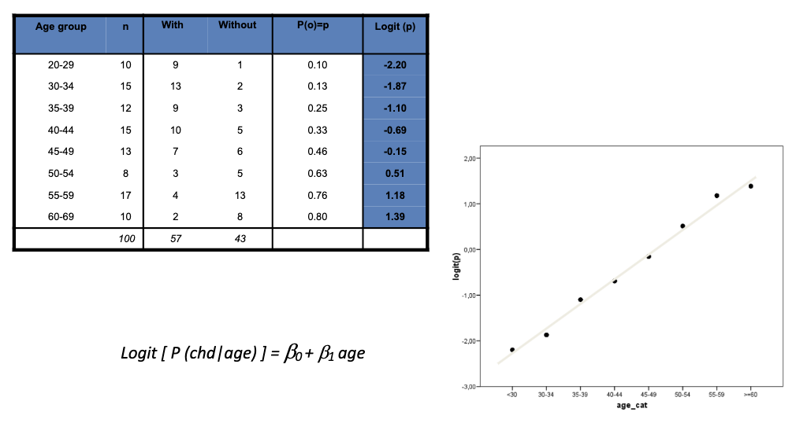
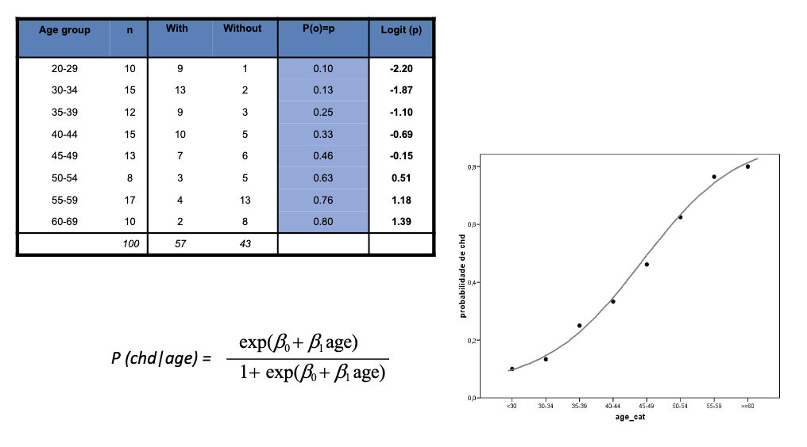
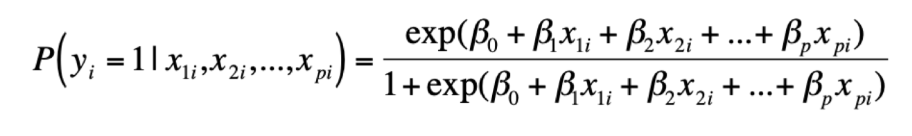

Lesson 8 - Logistic Regression#
Topic: Logistic Regression
Motivation#
Find the best and simplest model that describes the relationship between an outcome (dependent variable) and a set of covariates (independent variables).
The main difference between the logistic model and the linear model is that the outcome is a binary (dichotomous) variable.
In case of a binary outcome ( y_i ), we’ll model ( P(y_i | x_i) )
It is important to mention that:
If ( y ) is coded as 0 and 1, ( P(y_i|x_i) = \mu_{y|x} )
( 0 \leq P(y_i|x_i) \leq 1 )
There are several “s-shaped” functions which are also limited between 0 and 1 The most common is: 
The logit function comes after that to help get us back linear
logit (P(e)) = log (odds(e))
The logit function#
The logit function stretches the “s-shape” into a straight line. That is, if P(yi|xi)is “s-shaped”, logit (P(yi|xi)) is approximately a straight line. So,we can use the linear form to model logit(P(yi|xi))


The coefficients of logistic regression can thus be interpreted as (log) odds ratio.
That is, the odds of ( y=1 ) increases ( \exp(\beta_1) ) times when ( x ) increases one unit (also true for continuous ( x )).
The extension of the logistic regression model for multiple covariates is simple:  …coefficients are interpreted as odds ratio adjusted for the remaining variables.
Model building and evaluation#
We have been studying the estimation, interpretation and inference (CI and hypothesis testing).
Often the object of the study is to select the covariates that constitute the “best” model within the scientific context of the problem under analysis.
There are two key points in this process:
The choice of variables to integrate into the model
The evaluation of the adequacy of the model in general and in terms of individually covariates
Selecting covariates#
I - Univariate Analysis
Test each of the covariates individually
E.g. use contingency tables for categorical variables and t-tests for continuous variables, or use logistic regressions for each covariate
The advantage of contingency tables is the ease of identifying possible empty categories. This situation may lead to instability in the algorithms used in logistic regression.
If there are empty categories, or with few individuals, we should consider joining categories
II - Select the subset of variables to use in the multivariate model
A commonly used rule is to select covariates with p < 0.25 in the univariate analysis as candidates for the multivariate model
Also included in this subgroup are covariates that have a scientific justification or are of direct interest to research (e.g. treatment) even if p> 0.25
III - Running the multivariate model with the subset of covariates
Examine the significance (statistical and scientific) of covariates in the model
Compare the estimation of multivariate model parameters with the estimation of univariate models
Variables that do not contribute to the model (and there is no other justification for maintaining them in the model) should be removed one by one and the model should be reevaluated at each step.
IV - Look more closely
Having obtained a preliminary version of the multivariate model with the set of covariates that we think are the most important, we must now look more closely at each of the variables.
Categorical variables must have been analyzed in univariate models.
Regarding continuous variables we should check the linearity in the logit scale.
V - Study interactions
In the last covariate selection step we studied potential interactions between covariates.
Due to the number of possible interactions, we usually restrict ourselves to testing interactions that make sense in the context of the problem.
Automatic selection (stepwise)
Stepwise methods are automatic covariate selection procedures for integrating the model.
Some authors criticize this procedure because it is based only on statistical criteria and there is no more active intervention by the researcher.
However these methods may be useful for a first approach to model building or when the goal is to get a model with better predictability
There are two stepwise algorithms:
Backward stepwise
Forward stepwise Although there are slight variations to the backward and forward stepwise algorithms the fundamental idea is as follows.
Backward stepwise
The process starts with all variables in the model and the definition of the output criterion (e.g.max p=0.1).
Using the Wald test or likelihood ratio test, we removed from the model the variable with the highest p value, provided that p exceeds the defined output criterion.
We run the model again but now without this variable.
The process is repeated until there are no more covariates that meet the exit criteria.
Forward stepwise
The process begins by making separate logistic regressions for each covariate and defining an input and output criterion (e.g. the input criterion is 0.05 and the output criterion is 0.1).
The most significant variable (based on the Wald test or likelihood ratio test) that satisfies the input criterion is chosen to enter the model.
We ran regressions separately for the remaining covariates but now with the covariate selected in the previous step.
It is possible that by adding one more covariate, the previous covariate will no longer matter. If the p value for the preceding covariate has been changed to a value greater than the output criterion, then the previous covariate is removed.
The previous steps are repeated until there are no more covariates that meet the input criteria.
Model evaluation#
Quality of adjustment (sometimes referred to as calibration)
Compare the observed outcome with the predicted model
Ability to discriminate
Given the model covariates what is the ability to classify an individual
Calibration#
Hosmer-Lemeshow Test (chi-squared based)
General idea:
Compare what is predicted by the model and what is observed
Problem:
Observations are binary but the model predicts probabilities
We calculate for each individual the probability predicted by the model. Then, we consider the deciles (percentiles 10, 20, …, 90) of the probabilities predicted by the model. In each decile we can calculate the number of individuals with event observed and compare it with the expected number.
Discrimination#
Sensitivity & Specificity
To classify an individual based on the probability predicted by the model we need a rule:
For example, classify as
0 if P (y = 1|x) ≤ 0.5
1 if P (y = 1|x) > 0.5
Now we can compare the classification with what is observed
We can consider other “cutoffs” as classification criteria instead of 0.5.
Any criterion used is not sufficient to give a correct idea of the discriminatory capacity of the model.
As an extreme case, imagine a situation where all probabilities predicted by the model are less than 0.45; using the “cutoff” 0.5, no individual would be classified as positive outcome.
However, the model predicts that some individuals will have this outcome.
One option for choosing a “cutoff point” is to consider all possible “cutoffs” and calculate their sensitivity and specificity for each situation.
ROC Curve The graph representing the sensitivity and specificity pairs is called the receiver operating characteristic (ROC) curve. The area under the ROC curve is a measure of the model’s ability to discriminate.
= 0.5 indiscriminative
.7 - .8 acceptable
.8 - .9 excellent
> .9 hummmm…
Summary of Interpretations#
The coefficients of logistic regression can thus be interpreted as (log) odds ratio.
That is, the odds of ( y=1 ) increases ( \exp(\beta_1) ) times when ( x ) increases one unit (also true for continuous ( x )).
For an increase of W amount of var_1, there is an increase of Z times the odds of dependent_var.